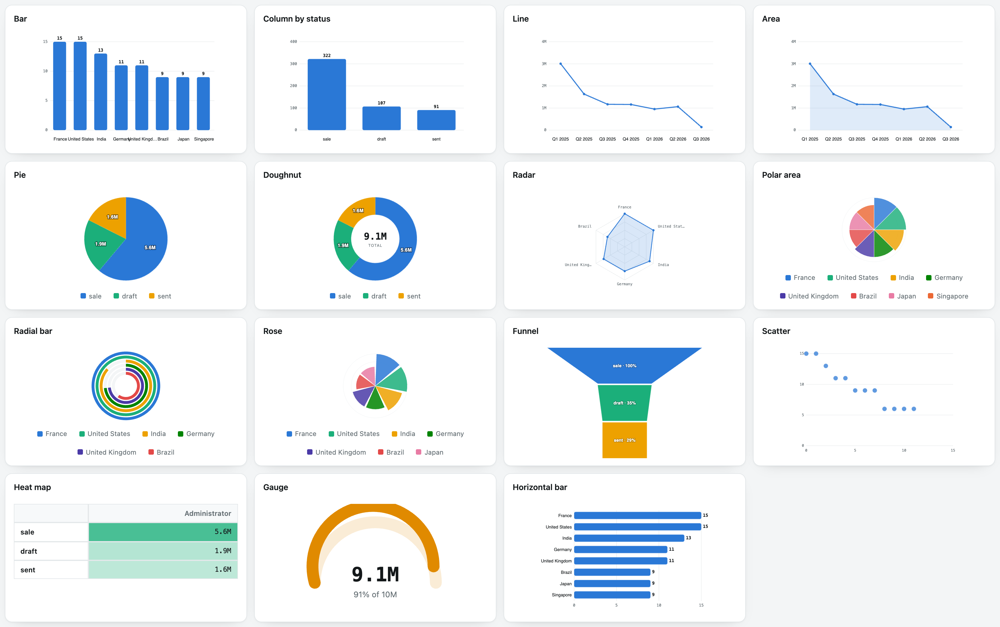
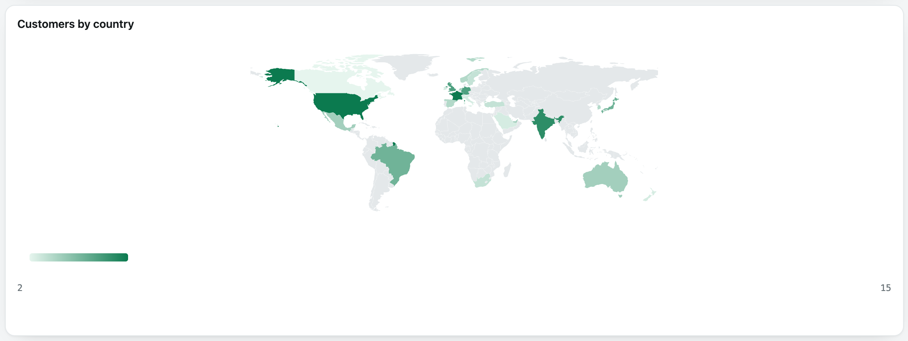
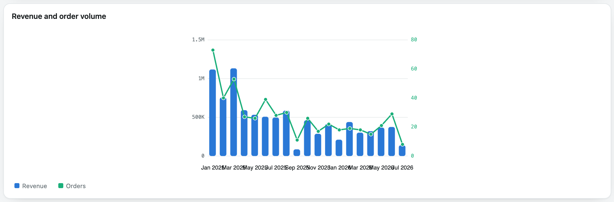
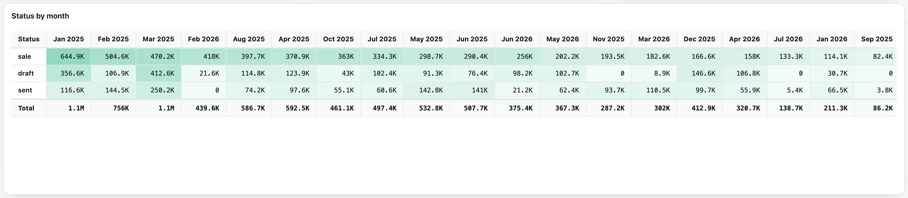
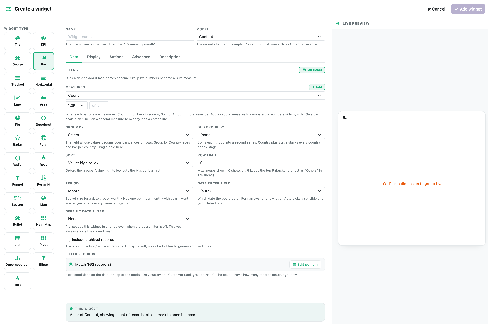
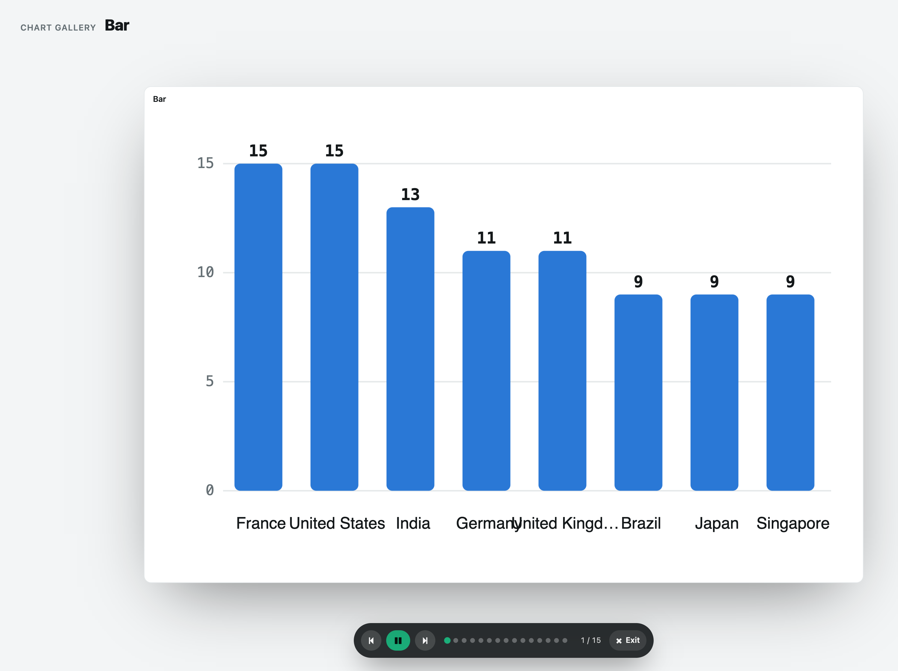

Start with a business question. Preview your accessible data, create a private dashboard, and trace the definition behind each business metric.
Sales, Receivables and Warehouse packs meet a visual builder with 26 chart and widget types. Optional AI proposes supported charts for review. Add administrator-configured Sheets or HTTPS JSON snapshots, then filter, drill and export your analysis. AI provider charges apply.
Free, no paid dependencies. Installs alongside your existing apps.
Choose readable models and saved sources for AI proposals. Compare independently grouped models with typed filters, explicit date scopes and arithmetic previews. Build weighted KPI objectives with owners, deliberate targets and visible scoring rules.
Preview before applying. Reuse scorecards through templates and portable backups. Missing or stale values remain unavailable; business amounts and currencies are never added into a score.
Choose Sales performance, Cash and Receivables, or Warehouse operations. Preview your real accessible data and inspect the definition and company behind each metric. Optional AI creates a proposal from those supported definitions; it never applies a dashboard without review.
Administrator-configured Google Sheets and HTTPS JSON sources refresh into snapshots with visible freshness. Private Sheets support service-account authentication. Failed refreshes keep prior valid data with a stale status; no demo values replace your results.
Existing screenshots below illustrate the chart library and earlier dashboard layouts. Read the included 7.0 and 7.1 setup guides for the new workflows, limits and configuration.
Odoo model aggregation runs with the viewer's access rights. Defined business packs make company, currency and date assumptions visible. Grouped reads and bounded loading reduce work; response time still depends on your database, filters and workload. Original SVG charts load without a chart CDN.
Bar, column, horizontal bar, line, area, pie, doughnut, radar, polar, radial, rose, funnel, pyramid, scatter, bullet, heat map, gauge, KPI tiles, a pivot matrix, a decomposition tree, a sync slicer and rich text. Each is a small registered strategy, drawn as original SVG.
Group by a country field and each country is shaded by the measure itself, with a gradient legend and click-through. It is an original projected SVG map, not pins on a borrowed tile layer, and it falls back to a ranked coloured list for any non-country dimension.
Click a mark and every widget re-scopes to it, or drill a chart a level deeper with a breadcrumb to climb back. A sync slicer drops a value chip that filters the whole board, and any figure opens the exact records behind it.

One engine, every chartBar, column, horizontal and stacked bars, line, area, pie, doughnut, radar, polar area, radial bar, a Nightingale rose, funnel, pyramid, scatter, bullet, heat map, gauge, KPI tiles, a pivot matrix, a decomposition tree, a slicer and rich text. No charting library, no CDN, every one original SVG.

Choropleth mapEvery country is coloured by its own value with a gradient scale, hover read-out and click-through drill. The geometry is a pre-projected SVG asset, so nothing loads from an external map service.
Pick a model, a group-by field and a measure. Count, sum, average, min, max, distinct count, or a calculated formula over other measures.
Compare two models on a shared key, such as orders versus invoices, merged in Python so both sides stay rule-safe. No raw SQL join to write.
Upload a CSV or Excel file and chart its columns directly. It is parsed to a light column list, never turned into a new database table, so a re-upload just refreshes.
Privileged SQL on the current Odoo database, with statement checks, timeout, row bounds and rollback. Raw SQL does not inherit Odoo record rules. Configure a least-privilege database role for additional protection.

Combo charts with a second axisDraw one measure as bars and another as a line on its own right-hand scale, so a value and a rate read together on one chart.

A true pivot matrixCross-tab any two dimensions with row, column and grand totals computed database side, a heat shade per cell, and click-through on any cell. Every total is exact for any aggregate, including averages, and each value can carry an adjacent percentage of its row, column or grand total.

A builder that explains itselfEvery field carries a plain example, a live preview redraws as you go, and a one-line summary reads back what you built. Pick ordered model fields for an individual-record list, or explicit pivot rows, columns and values. Data, display, actions, advanced and description tabs, drag-and-drop wells, conditional colour rules and a live record count stay in one panel.
Record each widget's headline value on a schedule to build history, raise a threshold alert that arms and re-arms cleanly, and email the whole board as a PDF to a chosen list on a cadence.
With your OpenAI or Anthropic key, request a dashboard from supported business metrics, review the plan and preview real data before applying it. Narration separately summarizes computed facts. Smart Build and deterministic suggestions need no provider key. Provider usage charges apply.
Start with Sales performance, Cash and Receivables, or Warehouse operations. Preview accessible data and read how values are calculated, then create a private draft. Existing saved templates and seven earlier starter packs remain available.
Play the board as a full-screen slideshow one widget at a time, or export it as vector PDF, Excel, CSV, a PNG of any chart, or the full board spec as JSON.
A tabbed builder with a live preview, drag-and-drop field wells, conditional colour rules, per-widget date ranges, sort and limit, and a full-text search over the model's fields. Delete asks first; discard reverts.
Screen-reader data tables, keyboard drill, right-to-left layouts and locale catalogs help teams use dashboards in their preferred working environment.

A real slideshow, and a kioskSpotlight each widget in turn with play, pause and manual steps, or leave it auto-rotating on a wall display. It opens over whatever you were doing and closes right back to it.
Aggregation is pushed to the database with bounded grouped reads, never a full recordset loaded into Python and folded in a loop. A board over a large ledger stays quick, and no single read can run unbounded.
Odoo ORM figures use the viewer's record rules and company access. Dashboards support owner, group and named-user audiences. SQL remains privileged; remote snapshots require administrator approval for the dashboard audience and do not inherit source-model record rules.
The grid, the charts and the map are all built from scratch, with no third-party charting bundle and nothing loaded from a content delivery network. It depends only on the web framework, so it installs everywhere.
Optional authoring sends your prompt and permitted metric definitions to the configured provider; narration sends computed facts. Raw rows and stored credentials are excluded from content payloads. The provider receives its authentication key. Authoring cannot run arbitrary SQL or Python, and a proposal must be reviewed before applying it.
The file source reads CSV and Excel columns for charting; it is not a two-way sync back to your files. Reading Excel needs the openpyxl library on your server, while CSV needs nothing extra.
Sales packs exclude foreign-currency orders. Receivables show current residuals, not historical as-of balances or forecasts. Warehouse packs count transfer documents, including returns. Each pack requires its matching app and access rights. Remote sources refresh on a schedule; external database connectors and anonymous chart publishing are not included.
Free, with no paid dependencies to pull in behind it. Install it, open the Dashboards menu, and a live welcome board is already waiting.